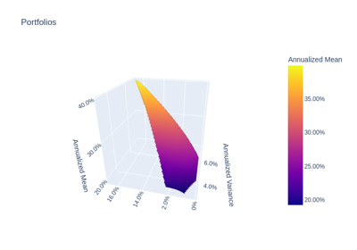

Mean-Risk# Examples using the MeanRisk optimization. Maximum Sharpe Ratio Maximum Sharpe Ratio Minimum CVaR Minimum CVaR Efficient Frontier Efficient Frontier  Mean-Variance-CDaR Surface Mean-Variance-CDaR Surface Weight Constraints Weight Constraints Transaction Costs Transaction Costs Management Fees Management Fees L1 and L2 Regularization L1 and L2 Regularization Uncertainty Set Uncertainty Set Tracking Error Tracking Error Empirical Prior Empirical Prior Black & Litterman Black & Litterman Factor Model Factor Model Black & Litterman Factor Model Black & Litterman Factor Model